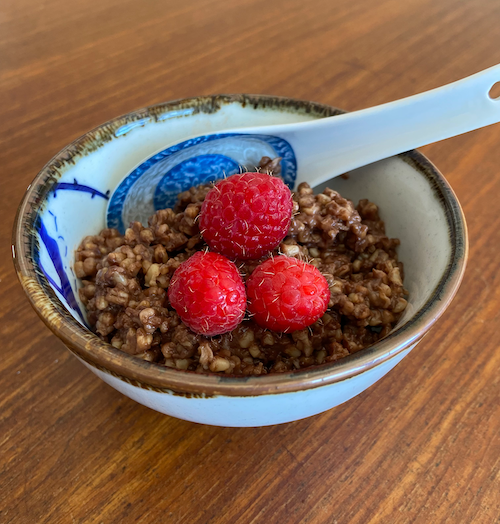
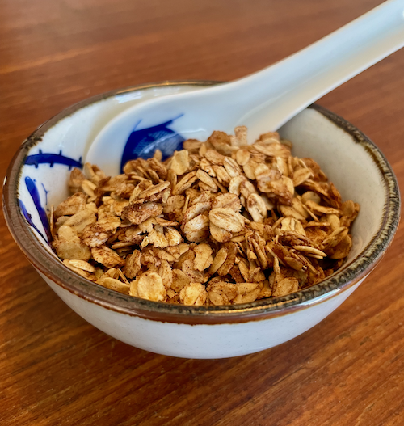

This recipe is adapted from Melissa Clark's Browned Butter Chocolate Oats recipe from the New York Times. Her original recipe is all made the morning of eating. This recipe adapts it so you start the night before, making for quicker preparation in the morning.
Ingredients
2 tbsp unsalted butter
1 1/2 cups steel-cut oats
3 tbsp cocoa
pinch of salt
3 cups water
1 1/2 cups water
Toppings of your choice! Diced pear or banana, chopped nuts, heavy cream, maple syrup, and demerara sugar are all popular in my house. A dusting of cinnamon is a delight.
Instructions
The night before: In a medium pot over medium heat, brown the butter. Watch this step carefully! You want it to smell nutty and the butter solids start to brown but it can quickly burn, so don't be tempted to leave.
Add the oats and stir, distributing the butter and toasting the oats, for a few minutes.
Add 3 cups of water, cocoa, and salt. Whisk to combine.
Bring to a boil. As soon as it boils, turn it off and move pot off of the burner. Stir well. Put lid back on and let it sit overnight.
The next morning: Add 1 1/2 cups water to oats. Stir well.
Heat on low temperature, stirring occasionally, until oats are heated through and water is mostly absorbed. (About 5 minutes.)
Remove from heat. Place lid on pot and let sit for 5 minutes or so.
While you're waiting, you can prepare toppings.
Granola

Ingredients
3/4 cup oil (neutral, sunflower for example)
1/2 cup honey and/or maple syrup (mixture is best)
1 bag large flake oats
1/4 cup flaxseed
3 tbsp cinnamon
1 tbsp ginger
1 tbsp kosher salt
1 tbsp vanilla extract
Instructions
In a small pot, add: oil, maple syrup, and honey. Add lid.
Heat over medium high. You want to bring it to a boil and let it bubble for a few minutes.
While mixture is heating, add all dry ingredients to a large bowl and mix.
Preheat oven to 250.
Line two large baking sheets with parchment paper. (It's handy, but not absolutely necessary, for the parchment to hang over the edges a bit.)
Once oil/honey/maple syrup mixture has bubbled away for a few minutes, add vanilla extract.
Carefully pour mixture over the oats. Stir thoroughly.
Spread in an even layer on the two parchment-lined sheets.
Bake until oats are golden brown. Usually about one hour.
Cool completely. Using parchment sheets as funnels, pour granola into airtight containers.